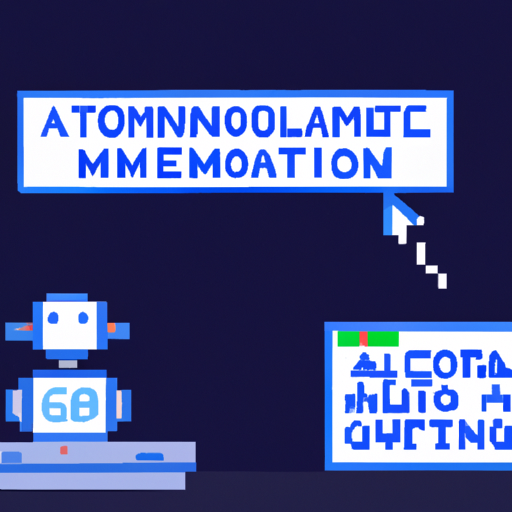

Generating Automated Blog Posts with OpenAI
Writing blog posts can be a tedious and time-consuming task. You have to come up with ideas, research, and then actually write the post. Even if you have the time, writing blog posts can be difficult and overwhelming. That’s why many are now turning to Artificial Intelligence (AI) and machine learning to automate the process.
OpenAI is one of the leading AI companies that are developing tools to help people generate automated blog posts. OpenAI’s GPT-2 algorithm is designed to generate text that is as close to human-written as possible. This technology is being used to create blog posts by using natural language processing (NLP) and machine learning to generate text from a given prompt.
The advantages of using OpenAI for blog post creation are numerous. For one, it cuts down on the time spent on the writing process. You can have a blog post written in a fraction of the time it would take to manually write it. Furthermore, OpenAI can create content that is more creative and interesting than manually written content.
Although OpenAI has made great strides in developing automated blog post creation, there are still some cons. For one, it is still difficult to generate content with OpenAI that is as creative and interesting as manually written content. Additionally, OpenAI does not always create content that is 100% accurate or grammatically correct.
In conclusion, OpenAI is a great tool for creating automated blog posts. It has the potential to reduce the amount of time spent on writing blog posts and can generate content that is more creative and interesting than manually written content. However, OpenAI is not perfect and still has some cons that need to be addressed.